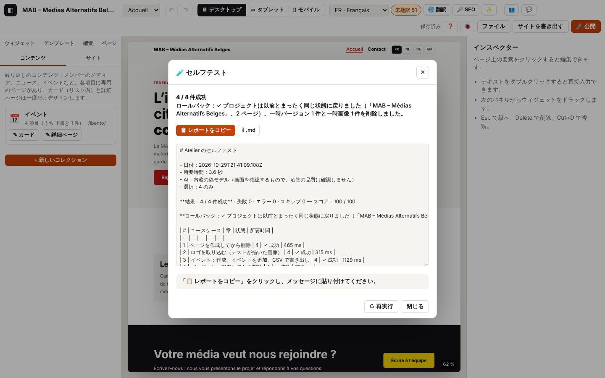

15. コンソールからのセルフテスト

以下のログ抜粋はフランス語で記録したものです。コードとレベルはどの言語でも同じです（実際のログのメッセージは表示言語で出ます）。
セルフテストは、このガイドの使用例を、あなたのブラウザーとあなたの環境で 再現します。誰かが代わりにクリックしているかのように、ウィジェットを追加し、元に戻し、ページを作成し、ロゴを読み込み、イベントのコレクションを作り、サイトを書き出し、publish.php への接続をテストします…。ケースごとに、プロジェクトで何が変わったか と 想定されるログ（前の章のコード）を確認し、メッセージに 貼り付けるためのレポート を作ります。あなたのプロジェクトは 事前に退避され、最後に 元どおりに戻されます（元に戻す履歴も含む）。何度でも実行できます。
ログのドメイン：selftest.*（セルフテストとロールバック）。各ケースはその章のコード（page.*、collection.*、export.* など）をそのまま使います。
15.1 セルフテストを実行する
方法は 3 つあり、下にいくほど詳しく指定できます。どの方法でも、20〜60 秒のあいだは何も触らず、このタブを表示したままにしてください（バックグラウンドのタブでは Chrome がページの動作を遅くするため、時間切れになるケースが出ます）。エディターに MAB のサンプルが表示され、ウィンドウが開いたり閉じたりしたあと、「🧪 セルフテスト」 ウィンドウに結果、ロールバック、レポートが表示されます。「📋 レポートをコピー」（または 「⇩ .md」）を押して、メッセージに貼り付けてください。
- アドレスから（コンソールなし）：
http://localhost:8888/atelier/?autotest（あなたのアドレス +?autotest）を開きます。セルフテストが自動で始まります。アドレスはすぐに元に戻されるので、再読み込みしても再実行されません。?autotest=realはあなたの Gemini Nano を使い、?autotest=offは AI のケースをスキップします。 - Ctrl+K「セルフテスト」。
- コンソールで（F12、Console タブ）、短いコマンドを 入力 します： 結果が 1 行返され、同じウィンドウが開きます。オプション付き：
autotest({ ai: 'real' })、autotest({ only: [4] })。autotest()
Chrome がコンソールへの貼り付けを拒否する？ 最初の 1 回だけ働く Chrome の保護機能です。Chrome の警告に表示される語句（英語版では allow pasting、フランス語版では autoriser le collage）を手で入力して Enter を押し、それから貼り付けてください。いちばん簡単なのは、autotest() を入力するか、アドレス ?autotest を使う方法です。
開発者向け：copy(await atelierDebug.selftest()) はウィンドウなしで同じことを行い、レポートをクリップボードに入れます（copy は Chrome のコンソールのコマンドです）。await atelierDebug.report() は最後のレポートをもう一度返します。
オプション
| オプション | 効果 | 例 |
|---|---|---|
only | 指定したケースだけ（ID または章番号） | atelierDebug.selftest({ only: [4, 'demander'] }) |
skip | 指定したもの以外すべて | atelierDebug.selftest({ skip: ['publication'] }) |
ai | 'fake'（既定）：内蔵の偽モデルで画面を確認、'real'：あなたの Gemini Nano、false：AI のケースをスキップ | atelierDebug.selftest({ ai: 'real' }) |
publish | true（既定）：プロジェクトのアドレスで publish.php への接続をテスト — 読み取りのみで、公開は決してしません、false：スキップ | atelierDebug.selftest({ publish: false }) |
full | セルフテストのログ全体をレポートに加える（長くなります） | autotest({ full: true }) |
download | .json（レポート、結果、ログ）もダウンロードする | atelierDebug.selftest({ download: true }) |
await atelierDebug.cases() で ID の一覧が出ます。本物の Gemini Nano の応答の 品質 を見るには、テストベンチ（第 14 章）が適しています。ai: 'real' は主に、そのモデルで画面が動くかを確認するものです。
26 のケース
| ID | 章 | ケース | 確認すること |
|---|---|---|---|
demarrage | 1 | テスト用プロジェクトを読み込んで保存 | サンプルが表示される、storage.save |
journal | 0 | 🐞 ウィンドウ：開く、設定する、閉じる | 行が表示される、設定が元に戻る |
selection | 2 | クリック、↓ キー、Esc | 見出し、次の要素、親の列 |
ajout | 2 | ライブラリからウィジェットを追加 | ボタンが 1 つ増え、選択されている |
annuler | 2 | 元に戻す、やり直す | ボタンが消えてから戻る |
raccourcis | 2 | Ctrl+D、Ctrl+C、Ctrl+V、Delete | 各段階での見出しの数 |
texte | 2 | ページ内で見出しを変更 | テキストが保存される、edit.ok |
panneaux | 2 | パネルを広げる（キーボード、ダブルクリック） | 左右のパネルが広がる、ハンドルが幅を伝える、元の幅に戻る。テスト後は自分の幅に戻ります |
infobulles | 2 | ボタンのツールチップ | ↶ にマウスを重ねる（「元に戻す」＋キー）、✨ の上をすばやく通過、クリックで非表示 |
commande | 2 | Ctrl+K「デバッグログ」 | ウィンドウが開く |
style | 3 | テキストのサイズ、↺ | 31px を設定してから解除 |
appareils | 3 | モバイル、続いてデスクトップ | キャンバスの幅 |
pages | 4 | ページを作成してから削除 | ページが開き、そのあと消える |
image | 4 | テストが描いたロゴ | 画像が変換され、プロジェクトに入る |
collection | 4 | イベント、イベント項目、CSV | 日付とタイトルが保存される、.csv |
versions | 4 | 保存してから削除 | バージョンが一覧に出て、そのあと消える |
traductions | 5 | 表、絞り込み | 表が表示される |
seo | 6 | SEO、別の言語 | 分析が再実行される |
ia-etat | 7 | モデルの状態 | ウィンドウに内容が入る |
verifier-exporter | 8 | チェック、続いて .zip | 書き出しが許可され、.zip ができる |
enregistrer-json | 1 | Ctrl+S | すべてのページを含む読み取り可能な .json |
publication | 8 | publish.php への接続をテスト | publish.php の応答、最新のバージョン |
palette | 12 | ロゴからパレット、元に戻す | AA を満たす色、適用してから元に戻す |
contenus-texte | 12 | 貼り付けたテキストから項目（AI） | 3 つの項目を提案してから作成 |
demander | 13 | 「3 問の FAQ を追加して」（AI） | FAQ が追加され、Ctrl+Z で一度に消える |
collaboration | 10 | 2 台のデバイス | 常にスキップ（第 10 章を参照） |
想定されるログ — アドレスから実行した場合（journaux/autotest-adresse.log）：
技術的な詳細：想定されるログ
14:34:25.101 +0.06s INFO selftest.auto Auto-test demandé par l’adresse (?autotest) {"ai":"fake"}
14:34:25.413 +0.37s INFO selftest.run.start [selftest.run#1] Auto-test : 25 cas d’usage {"cases":["demarrage","journal","selection","ajout","annuler","raccourcis","texte","infobulles","commande","style","appareils","pages","image","collection","versions","traductions","seo","ia-etat","verifier-exp…
14:34:47.870 +22.83s INFO selftest.run.ok [selftest.run#1 · 22457 ms] Auto-test terminé : 24 / 24 réussis, note 100 / 100 — Retour arrière : ✓ ton projet est revenu exactement comme avant (« MAB – Médias Alternatifs Belges », 3 pages) ; 0 version(s) et 1 image(s) temporaires supprimées. {"total":2…
14:34:47.878 +22.84s INFO selftest.dialog Fenêtre du rapport de l’auto-test {"result":"24 / 24 réussis"}続いてケースごとに（journaux/autotest-lancement.log、冒頭部分）
技術的な詳細：想定されるログ
14:33:11.064 +2.89s INFO selftest.run.start [selftest.run#1] Auto-test : 25 cas d’usage {"cases":["demarrage","journal","selection","ajout","annuler","raccourcis","texte","infobulles","commande","style","appareils","pages","image","collection","versions","traductions","seo","ia-etat","verifier-exp…
14:33:11.066 +2.89s INFO selftest.backup.start [selftest.backup#1] Mise de côté du projet avant l’auto-test {"name":"MAB – Médias Alternatifs Belges","pages":3,"past":3}
…
14:33:11.076 +2.90s INFO selftest.backup.ok [selftest.backup#1 · 11 ms] Projet mis de côté (mémoire, copie de secours, version de sécurité) {"safety":"v_mvtl2y3lpdk3m","versions":1,"images":1}
…
14:33:11.860 +3.68s INFO selftest.case ✓ Projet de test chargé et enregistré sur l’appareil {"id":"demarrage","status":"ok","ms":776}
…
14:33:12.655 +4.48s INFO selftest.case ✓ Fenêtre 🐞 Journal : ouvrir, régler, fermer {"id":"journal","status":"ok","ms":714}
…
14:33:13.181 +5.00s INFO selftest.case ✓ Sélectionner : clic, flèche ↓, Échap {"id":"selection","status":"ok","ms":445}
…
14:33:13.881 +5.70s INFO selftest.case ✓ Ajouter un widget depuis la bibliothèque {"id":"ajout","status":"ok","ms":619}
…
14:33:15.127 +6.95s INFO selftest.case ✓ Annuler puis rétablir {"id":"annuler","status":"ok","ms":1164}
…
14:33:16.599 +8.42s INFO selftest.case ✓ Dupliquer, copier, coller, supprimer au clavier {"id":"raccourcis","status":"ok","ms":1391}
…
14:33:16.976 +8.80s INFO selftest.case ✓ Modifier un titre directement dans la page {"id":"texte","status":"ok","ms":296}
…
14:33:17.697 +9.52s INFO selftest.case ✓ Infobulles des boutons : survol, raccourci, masquage {"id":"infobulles","status":"ok","ms":639}
…
14:33:18.397 +10.22s INFO selftest.case ✓ Ctrl+K : lancer une commande {"id":"commande","status":"ok","ms":619}
…
14:33:19.351 +11.17s INFO selftest.case ✓ Style : taille du texte, puis réinitialiser {"id":"style","status":"ok","ms":873}
…
14:33:20.221 +12.04s INFO selftest.case ✓ Aperçu mobile puis ordinateur {"id":"appareils","status":"ok","ms":787}
…
14:33:20.749 +12.57s INFO selftest.case ✓ Créer puis supprimer une page {"id":"pages","status":"ok","ms":448}
…
14:33:21.147 +12.97s INFO selftest.case ✓ Importer un logo (image dessinée par le test) {"id":"image","status":"ok","ms":316}
…
14:33:22.344 +14.17s INFO selftest.case ✓ Agenda : créer, ajouter un événement, exporter en CSV {"id":"collection","status":"ok","ms":1116}
…
14:33:23.147 +14.97s INFO selftest.case ✓ Versions : enregistrer puis supprimer {"id":"versions","status":"ok","ms":723}
…
14:33:23.760 +15.58s INFO selftest.case ✓ Tableau des traductions : ouvrir, filtrer {"id":"traductions","status":"ok","ms":532}
…
14:33:24.514 +16.34s INFO selftest.case ✓ Référencement : ouvrir, changer de langue {"id":"seo","status":"ok","ms":672}
…
14:33:25.219 +17.04s INFO selftest.case ✓ IA locale : état des modèles {"id":"ia-etat","status":"ok","ms":623}
…
14:33:25.632 +17.45s INFO selftest.case ✓ Vérifier puis exporter le site en .zip {"id":"verifier-exporter","status":"ok","ms":333}
…
14:33:26.170 +17.99s INFO selftest.case ✓ Enregistrer le projet en .json (Ctrl+S) {"id":"enregistrer-json","status":"ok","ms":457}
…
14:33:26.692 +18.51s INFO selftest.case ✓ Tester la connexion à publish.php (sans publier) {"id":"publication","status":"ok","ms":441}
…
14:33:27.414 +19.24s INFO selftest.case ✓ Palette depuis le logo, puis annuler {"id":"palette","status":"ok","ms":640}
…
14:33:28.350 +20.17s INFO selftest.case ✓ Fiches créées depuis un texte collé (IA) {"id":"contenus-texte","status":"ok","ms":856}
…
14:33:29.514 +21.34s INFO selftest.case ✓ Demander à Atelier : « ajoute une FAQ de 3 questions » (IA) {"id":"demander","status":"ok","ms":1083}
14:33:29.594 +21.42s INFO selftest.case – Collaboration en direct (deux appareils) : ignoré (demande deux appareils : voir le chapitre 10 du guide) {"id":"collaboration","status":"skipped","reason":"demande deux appareils : voir le chapitre 10 du guide"}15.2 レポートを読む
レポートは 結果（「23 / 23 件成功 — スコア：100 / 100」）と ロールバックの状態 で始まり、ケースの表が続きます。失敗したケースごとに、次の内容が示されます。
- 失敗した確認 と、実際に読み取った値（「ページのボタンが 1 つ増加 — 期待値 3、実際 2」）
- 想定されるのに見つからなかったログのコード（そのケースの章と比べてください）
- 予期しないエラー（そのケースの一部ではない
ERROR） - そのケースのログの抜粋（最後の 80 行）
そのあとに、テスト中のすべての警告とエラー、最後に環境（ブラウザー、ストレージ、AI、プロジェクト）が続きます。
| ステータス | 意味 |
|---|---|
| ✓ 成功 | すべての確認と想定されるコードがそろい、予期しないエラーがない |
| ✗ 失敗 | 確認の失敗、想定されるコードの欠落、または予期しないエラーがある |
| ⚠ エラー | ケースが途中で止まった：要素が見つからない、時間切れ、例外（原因が示されます） |
| – スキップ | 条件がそろっていない：AI がない、publish.php のアドレスがない、2 台のデバイスが必要、停止が要求された |
実例：プロジェクトのアドレスに publish.php が見つからない場合（ケースは失敗し、原因がレポートに書かれます。以下はフランス語の表示言語で出力したものです）：
### ✗ Tester la connexion à publish.php (sans publier) (`publication`, chapitre 8)
- ✗ publish.php répond — réponse 404 qui n’est pas celle de publish.php→ 第 8 章「接続をテスト」：アドレスと、ファイルが正しく置かれているかを確認してください。
15.3 ロールバック
最初のケースの前に、あなたのプロジェクトは 3 か所 に退避されます。
- メモリ内（元に戻す履歴、開いているページ、言語、デバイスも含む）
- ブラウザーのローカルデータベースにある バックアップ用の領域
- 安全バージョン「セルフテスト前（日付）」（ファイル → バージョン）
最後に — 途中でケースがクラッシュしても — エディターはすべてを元に戻し、プロジェクトが 元と同一 であることを確認し（内容の比較）、保存し直して読み直し、ログの設定とブラウザーの環境設定を戻し、テスト中に作られたバージョンと画像を削除します。バックアップと安全バージョンが消されるのは、確認に問題がなかった 場合だけ です。
技術的な詳細：想定されるログ
14:34:02.229 +2.01s INFO selftest.rollback.start [selftest.rollback#2] Retour arrière : le projet d’avant l’auto-test est remis {"name":"MAB – Médias Alternatifs Belges"}
14:34:02.235 +2.01s DEBUG selftest.rollback.memory [selftest.rollback#2 · 6 ms] Projet et historique remis en mémoire {"same":true,"past":0,"future":0}
14:34:02.258 +2.04s DEBUG selftest.rollback.saved [selftest.rollback#2 · 29 ms] Projet réenregistré et relu à l’identique {"stored":true}
14:34:02.268 +2.05s INFO selftest.rollback.ok [selftest.rollback#2 · 39 ms] Retour arrière terminé : projet identique à l’original {"ok":true,"same":true,"name":"MAB – Médias Alternatifs Belges","pages":3,"versions":0,"assets":0,"problems":[]}
14:34:06.300 +6.08s INFO selftest.run.ok [selftest.run#1 · 5233 ms] Auto-test terminé : 1 / 1 réussis, note 100 / 100 — Retour arrière : ✓ ton projet est revenu exactement comme avant (« MAB – Médias Alternatifs Belges », 3 pages). {"total":13,"ok":1,"fail":0,"error":0,"skipped":12,"score":100,"ms…すぐに停止してロールバックする：
await atelierDebug.rollback()テスト中の場合、停止するのは 実行中のケースが終わってから です（残りのケースは「スキップ：停止」になります）。そのあとプロジェクトが元に戻されます（journaux/autotest-rollback.log）：
技術的な詳細：想定されるログ
14:34:02.147 +1.93s INFO selftest.case ✓ Sélectionner : clic, flèche ↓, Échap {"id":"selection","status":"ok","ms":437}
14:34:02.162 +1.94s INFO selftest.stop Arrêt demandé : le projet sera remis après le cas en cours
14:34:02.228 +2.01s INFO selftest.case – Ajouter un widget depuis la bibliothèque : ignoré (arrêté : retour arrière demandé) {"id":"ajout","status":"skipped","reason":"arrêté : retour arrière demandé"}
14:34:02.228 +2.01s INFO selftest.case – Annuler puis rétablir : ignoré (arrêté : retour arrière demandé) {"id":"annuler","status":"skipped","reason":"arrêté : retour arrière demandé"}
14:34:02.228 +2.01s INFO selftest.case – Dupliquer, copier, coller, supprimer au clavier : ignoré (arrêté : retour arrière demandé) {"id":"raccourcis","status":"skipped","reason":"arrêté : retour arrière demandé"}
14:34:02.228 +2.01s INFO selftest.case – Modifier un titre directement dans la page : ignoré (arrêté : retour arrière demandé) {"id":"texte","status":"skipped","reason":"arrêté : retour arrière demandé"}
14:34:02.228 +2.01s INFO selftest.case – Infobulles des boutons : survol, raccourci, masquage : ignoré (arrêté : retour arrière demandé) {"id":"infobulles","status":"skipped","reason":"arrêté : retour arrière demandé"}
14:34:02.228 +2.01s INFO selftest.case – Ctrl+K : lancer une commande : ignoré (arrêté : retour arrière demandé) {"id":"commande","status":"skipped","reason":"arrêté : retour arrière demandé"}
14:34:02.228 +2.01s INFO selftest.case – Style : taille du texte, puis réinitialiser : ignoré (arrêté : retour arrière demandé) {"id":"style","status":"skipped","reason":"arrêté : retour arrière demandé"}
14:34:02.228 +2.01s INFO selftest.case – Aperçu mobile puis ordinateur : ignoré (arrêté : retour arrière demandé) {"id":"appareils","status":"skipped","reason":"arrêté : retour arrière demandé"}
14:34:02.228 +2.01s INFO selftest.case – Créer puis supprimer une page : ignoré (arrêté : retour arrière demandé) {"id":"pages","status":"skipped","reason":"arrêté : retour arrière demandé"}
14:34:02.228 +2.01s INFO selftest.case – Importer un logo (image dessinée par le test) : ignoré (arrêté : retour arrière demandé) {"id":"image","status":"skipped","reason":"arrêté : retour arrière demandé"}
14:34:02.228 +2.01s INFO selftest.case – Agenda : créer, ajouter un événement, exporter en CSV : ignoré (arrêté : retour arrière demandé) {"id":"collection","status":"skipped","reason":"arrêté : retour arrière demandé"}
14:34:02.228 +2.01s INFO selftest.case – Versions : enregistrer puis supprimer : ignoré (arrêté : retour arrière demandé) {"id":"versions","status":"skipped","reason":"arrêté : retour arrière demandé"}
…
14:34:02.268 +2.05s INFO selftest.rollback.ok [selftest.rollback#2 · 39 ms] Retour arrière terminé : projet identique à l’original {"ok":true,"same":true,"name":"MAB – Médias Alternatifs Belges","pages":3,"versions":0,"assets":0,"problems":[]}テストの途中でページを再読み込みした、またはタブを閉じた場合：次に起動したとき、エディターが自動でバックアップを取り戻し、後片付けをして知らせます（「セルフテストが中断されていました。プロジェクトは元の状態に戻されました。」）。この場合、元に戻す履歴は空から始まります（journaux/autotest-interrompu.log）：
技術的な詳細：想定されるログ
14:34:00.237 +0.02s INFO storage.load Projet rechargé depuis cet appareil {"slot":"selftest-backup","name":"MAB – Médias Alternatifs Belges","pages":3,"images":1,"ms":10}
14:34:00.237 +0.02s WARN selftest.recovered Auto-test interrompu : le projet d’avant le test est repris {"at":"2026-10-29T13:33:54.245Z","name":"MAB – Médias Alternatifs Belges","pages":3}
14:34:00.240 +0.02s INFO selftest.rollback.start [selftest.rollback#1] Nettoyage après un auto-test interrompu {"at":"2026-10-29T13:33:54.245Z"}
14:34:00.288 +0.07s DEBUG storage.version-delete 1 version supprimée {"ids":["v_mvtl3veq6n0cs"]}
14:34:00.293 +0.07s DEBUG storage.project-delete Emplacement de projet effacé {"slot":"selftest-backup"}
14:34:00.293 +0.07s INFO selftest.rollback.ok [selftest.rollback#1 · 53 ms] Projet d’avant l’auto-test remis {"versions":0,"assets":0}
14:34:01.032 +0.81s INFO storage.load Projet rechargé depuis cet appareil {"slot":"current","name":"MAB – Médias Alternatifs Belges","pages":3,"images":1,"ms":1}| 状況 | メッセージ | ログ | 対処 |
|---|---|---|---|
| 共同編集のセッション中 | 「セルフテストを実行できません。先に共同編集のセッションから退出してください」 | selftest.refused（WARN） | 変更がほかの人に送られてしまいます：👥 から退出して、もう一度実行してください |
| レビューモード | 「レビューモードではセルフテストを実行できません。」 | selftest.refused（WARN） | 同上 |
| すでに実行中 | 「セルフテストはすでに実行中です。」 | selftest.refused（WARN） | 待つか、atelierDebug.rollback() |
| 選択したケースが空 | ID の一覧 | selftest.refused（WARN） | only／skip を直してください |
| ロールバックが不完全 | 「ロールバック：✗ …」 | selftest.rollback.fail（ERROR） | await atelierDebug.rollback() を実行するか、「バージョン」で「セルフテスト前」を復元してください |
| バックアップが見つからない | 「…「セルフテスト前」のバージョンを復元してください」 | selftest.recover-missing（WARN） | ファイル → バージョン |
| クリップボードが拒否された | 「コピーが拒否されました。レポート内をクリックし、Ctrl+A、Ctrl+C の順に押してください」 | selftest.copy-fail（WARN） | レポートのテキストを選択するか、「⇩ .md」 |
技術的な詳細：想定されるログ
14:33:54.175 +46.00s WARN selftest.refused Auto-test refusé en mode relecture {"reason":"readonly"}
14:33:54.179 +46.00s WARN selftest.refused Aucun cas ne correspond à la sélection {"only":["inconnu"]}この章のコード
| コード | レベル | 意味 |
|---|---|---|
selftest.run.start、selftest.run.ok、selftest.run.fail | INFO / INFO / ERROR | 1 回の実行全体（ケース、結果、ロールバックの状態） |
selftest.run.aborted | ERROR | 予期しないエラーでセルフテストが中断した（それでもロールバックは行われる） |
selftest.backup.start、selftest.backup.slot、selftest.backup.ok、selftest.backup.fail | INFO / DEBUG / INFO / ERROR | プロジェクトの退避（メモリ、バックアップ、安全バージョン） |
selftest.case-start | DEBUG | ケースの開始 |
selftest.case | INFO / WARN | ケースが終了した（ステータス、所要時間） |
selftest.check-fail | WARN | 確認に失敗した（読み取った内容付き） |
selftest.missing | WARN | ケースの実行中に、想定されるログのコードが出なかった |
selftest.unexpected | WARN | ケースの実行中の予期しないエラー |
selftest.download | DEBUG | テスト中のダウンロードを横取りした（パソコンには何も保存されない） |
selftest.copy、selftest.copy-fail | DEBUG / INFO / WARN | レポートをコピーした、またはクリップボードが拒否された（コンソールから：DEBUG、ウィンドウのボタンから：INFO / WARN） |
selftest.dialog | INFO | レポートの 🧪 ウィンドウを開いた |
selftest.ai-recheck-fail | DEBUG | テスト後に AI の実際の状態を再確認できなかった（レポートの環境情報が不完全な場合がある） |
selftest.focus-fallback | DEBUG | ウィンドウにフォーカスがなかった（コンソール、ターミナル、または別のアプリが前面にある）：テキスト編集の終了を擬似的に実行 |
selftest.report-download | INFO | レポートを .md でダウンロードした |
selftest.auto | INFO | アドレス ?autotest でセルフテストが要求された |
selftest.refused | WARN | セルフテストを拒否した（共同編集、レビュー、実行中、選択が空） |
selftest.stop | INFO | テスト中に atelierDebug.rollback() で停止が要求された |
selftest.rollback.start、selftest.rollback.ok、selftest.rollback.fail | INFO / INFO / ERROR | ロールバック（テスト終了時、手動、または起動時） |
selftest.rollback.memory、selftest.rollback.saved | DEBUG / WARN | プロジェクトをメモリに戻した。保存し直して読み直した（違いがあれば WARN） |
selftest.rollback.assets | WARN | 一時的な画像を取り除けなかった（影響なし） |
selftest.rollback.none | INFO | rollback()：戻すものがない |
selftest.recovered | WARN | 起動時：セルフテストが中断されていたので、バックアップを取り戻した |
selftest.recover-missing、selftest.recover-fail | WARN / ERROR | バックアップが見つからない。起動時に後片付けができない |
store.restore | INFO | エディターを記録した状態に戻した（プロジェクト、履歴、表示） |
storage.project-delete、storage.asset-delete | DEBUG | バックアップを消去した。一時的な画像を取り除いた |